Generated automated frame verification at midpoint of every scene.
[01] act0_scene1 (screen)
Lum: 103.6 | Std: 72.2
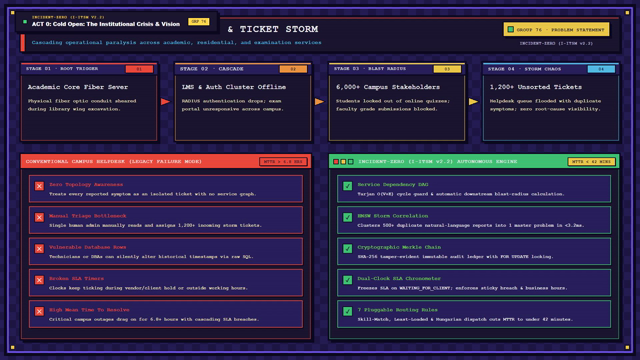
[02] act0_scene2 (diagram)
Lum: 43.5 | Std: 34.4
[03] act0_scene3 (screen)
Lum: 50.0 | Std: 37.9
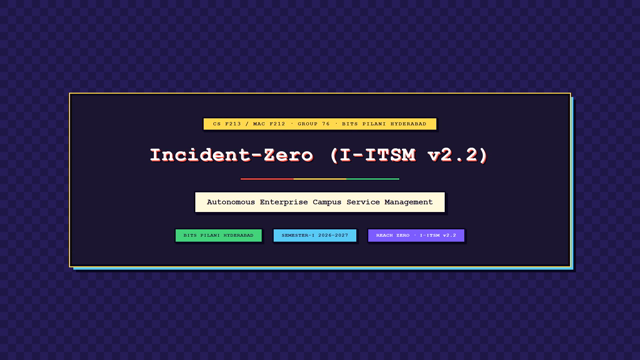
[04] act0_scene4 (title)
Lum: 42.2 | Std: 42.7
[05] act1_scene1 (title)
Lum: 42.7 | Std: 43.7
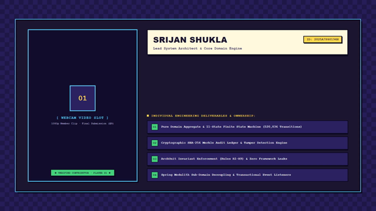
[06] act1_scene2 (member_slot)
Lum: 44.0 | Std: 53.2
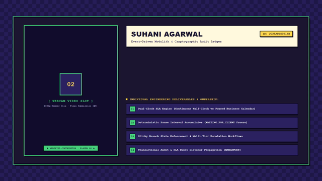
[07] act1_scene3 (member_slot)
Lum: 43.7 | Std: 52.6
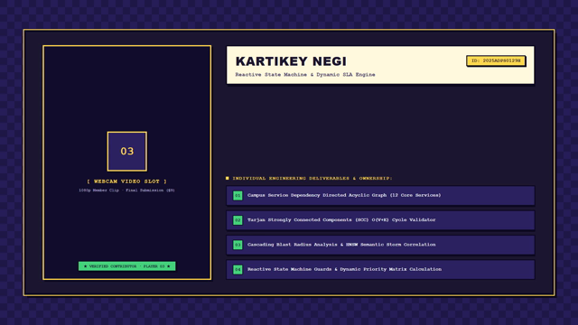
[08] act1_scene4 (member_slot)
Lum: 44.5 | Std: 54.2
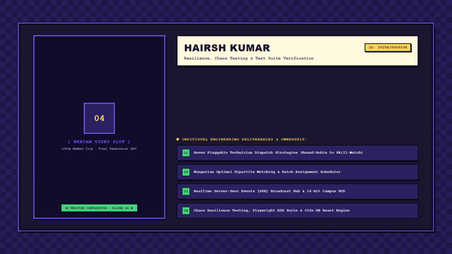
[09] act1_scene5 (member_slot)
Lum: 43.2 | Std: 52.2
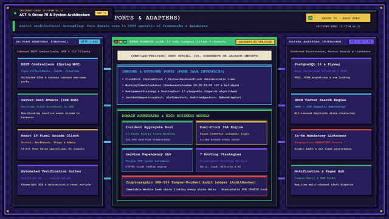
[10] act1_scene6 (diagram)
Lum: 47.6 | Std: 41.9
[11] act1_scene7 (screen)
Lum: 53.8 | Std: 38.4
[12] act1_scene8 (screen)
Lum: 103.6 | Std: 72.2
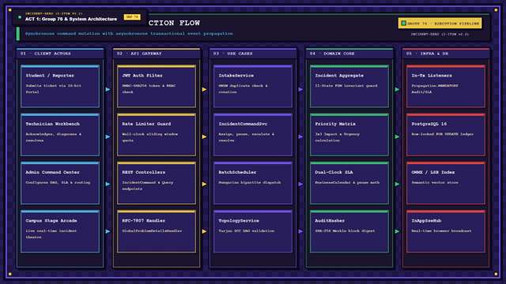
[13] act1_scene9 (diagram)
Lum: 42.7 | Std: 31.5
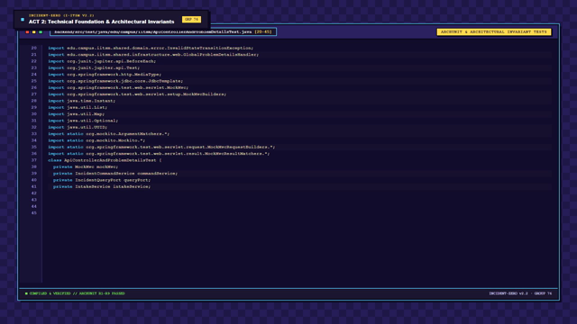
[14] act2_scene1 (code)
Lum: 26.8 | Std: 22.7
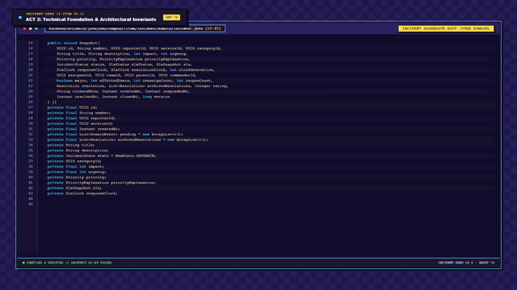
[15] act2_scene2 (code)
Lum: 27.2 | Std: 22.4
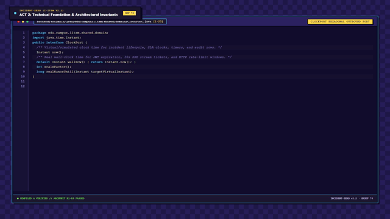
[16] act2_scene3 (code)
Lum: 24.8 | Std: 19.8
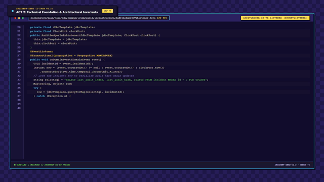
[17] act2_scene4 (code)
Lum: 26.4 | Std: 22.2
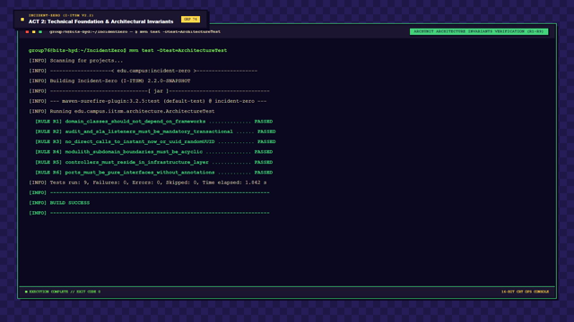
[18] act2_scene5 (terminal)
Lum: 21.8 | Std: 22.3
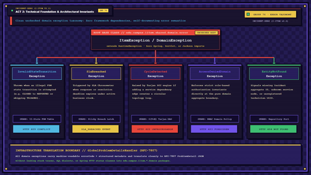
[19] act2_scene6 (diagram)
Lum: 41.5 | Std: 36.2
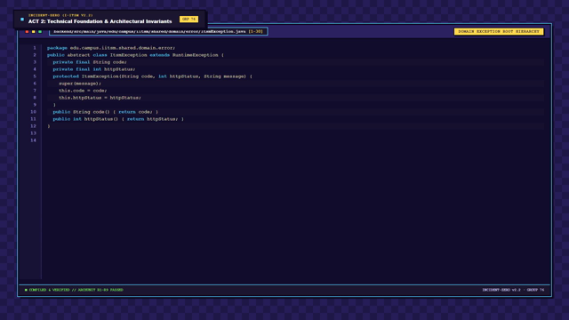
[20] act2_scene7 (code)
Lum: 25.0 | Std: 20.1
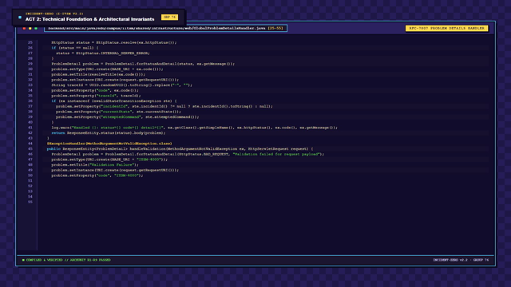
[21] act2_scene8 (code)
Lum: 27.4 | Std: 23.2
[22] act2_scene9 (screen)
Lum: 53.6 | Std: 37.9
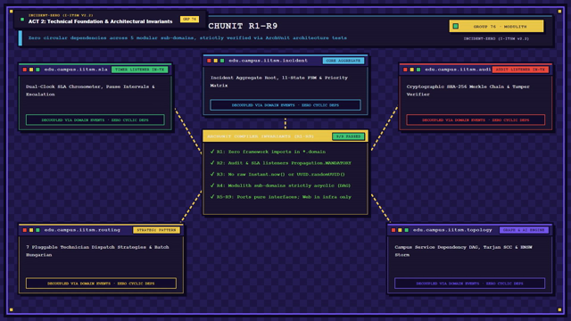
[23] act2_scene10 (diagram)
Lum: 37.1 | Std: 31.3
[24] act3_scene1 (screen)
Lum: 49.6 | Std: 36.4
[25] act3_scene2 (screen)
Lum: 49.6 | Std: 36.4
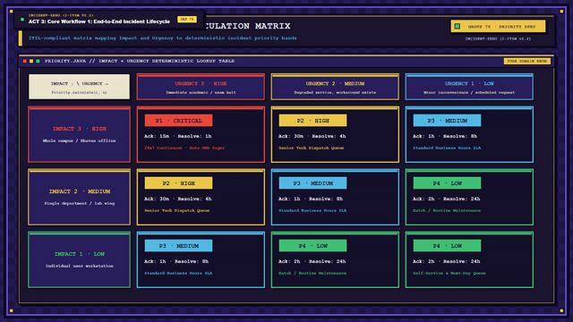
[26] act3_scene3 (diagram)
Lum: 45.8 | Std: 46.9
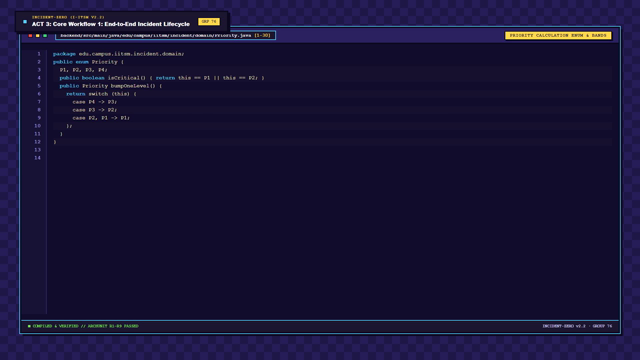
[27] act3_scene4 (code)
Lum: 24.7 | Std: 19.5
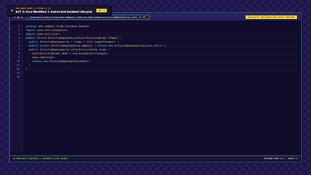
[28] act3_scene5 (code)
Lum: 25.3 | Std: 20.5
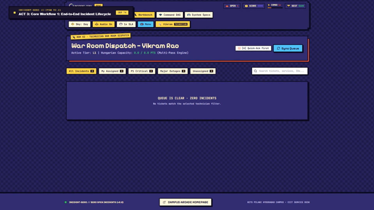
[29] act3_scene6 (screen)
Lum: 49.9 | Std: 37.9
[30] act3_scene7 (screen)
Lum: 49.9 | Std: 38.0
[31] act3_scene8 (screen)
Lum: 49.9 | Std: 37.9
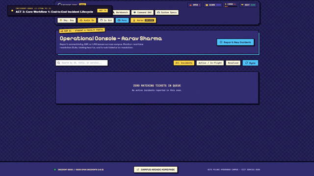
[32] act3_scene9 (screen)
Lum: 49.6 | Std: 36.5
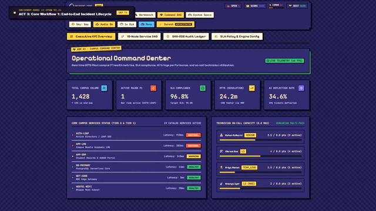
[33] act3_scene10 (screen)
Lum: 53.4 | Std: 39.3
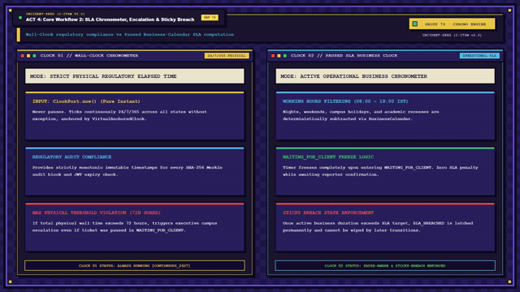
[34] act4_scene1 (diagram)
Lum: 48.3 | Std: 46.8
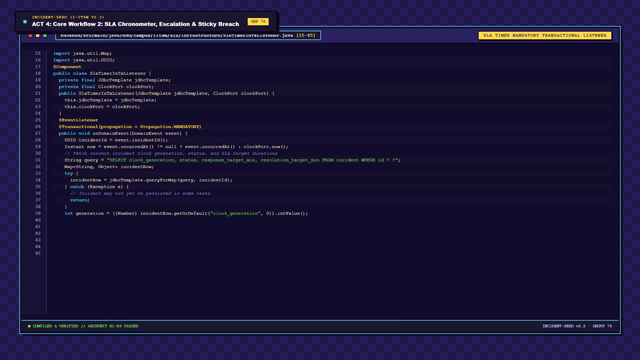
[35] act4_scene2 (code)
Lum: 26.4 | Std: 22.3
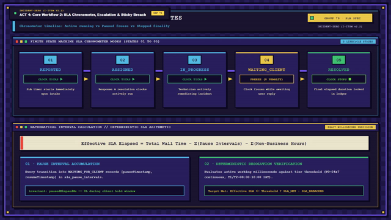
[36] act4_scene3 (diagram)
Lum: 50.2 | Std: 52.3
[37] act4_scene4 (screen)
Lum: 49.6 | Std: 37.5
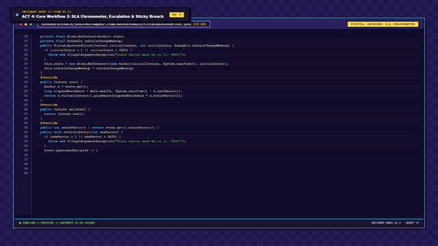
[38] act4_scene5 (code)
Lum: 26.4 | Std: 21.8
[39] act4_scene6 (screen)
Lum: 49.6 | Std: 37.4
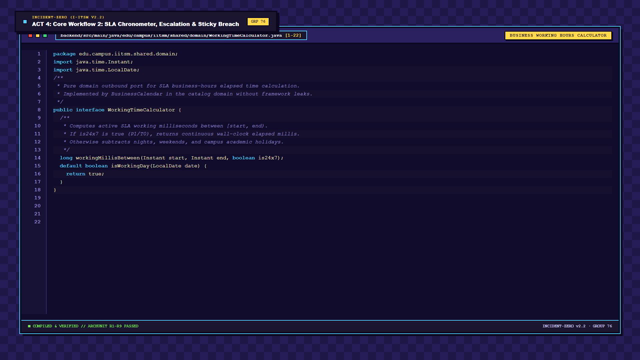
[40] act4_scene7 (code)
Lum: 25.5 | Std: 20.4
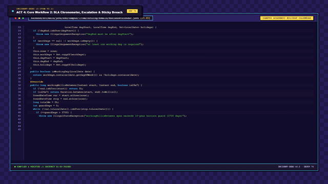
[41] act4_scene8 (code)
Lum: 26.5 | Std: 21.9
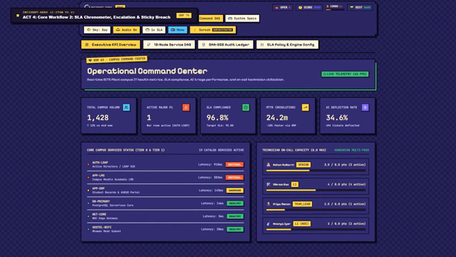
[42] act4_scene9 (screen)
Lum: 53.0 | Std: 38.8
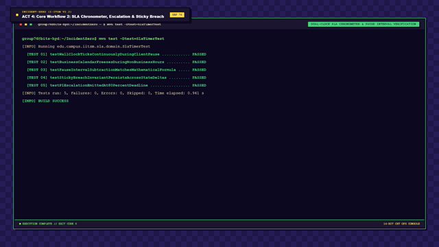
[43] act4_scene10 (terminal)
Lum: 20.9 | Std: 21.3
[44] act5_scene1 (screen)
Lum: 53.1 | Std: 38.8
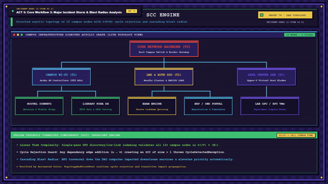
[45] act5_scene2 (diagram)
Lum: 39.6 | Std: 36.7
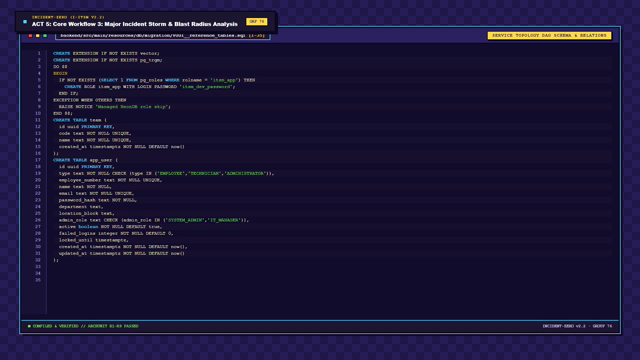
[46] act5_scene3 (code)
Lum: 26.8 | Std: 22.3
[47] act5_scene4 (screen)
Lum: 49.7 | Std: 37.5
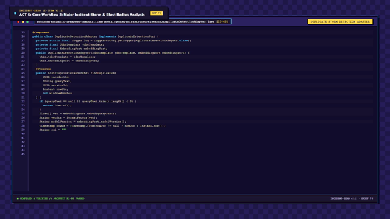
[48] act5_scene5 (code)
Lum: 26.4 | Std: 22.1
[49] act5_scene6 (screen)
Lum: 50.0 | Std: 37.4
[50] act5_scene7 (screen)
Lum: 49.6 | Std: 37.4
[51] act5_scene8 (screen)
Lum: 53.1 | Std: 38.9
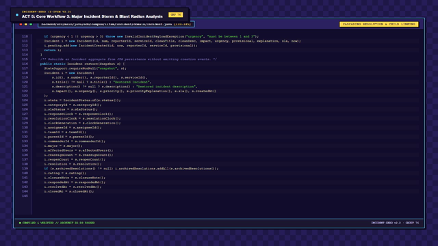
[52] act5_scene9 (code)
Lum: 27.7 | Std: 23.0
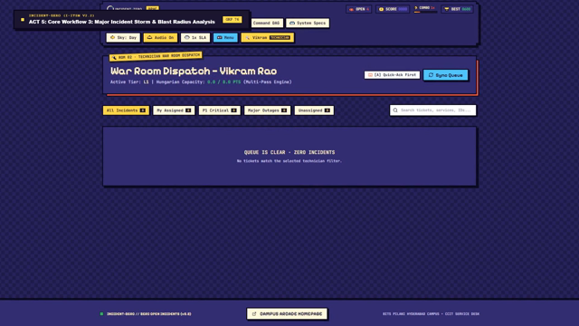
[53] act5_scene10 (screen)
Lum: 49.6 | Std: 37.5
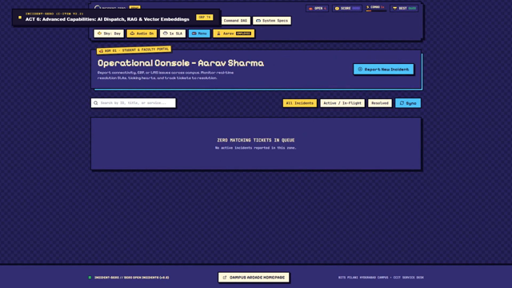
[54] act6_scene1 (screen)
Lum: 49.3 | Std: 35.9
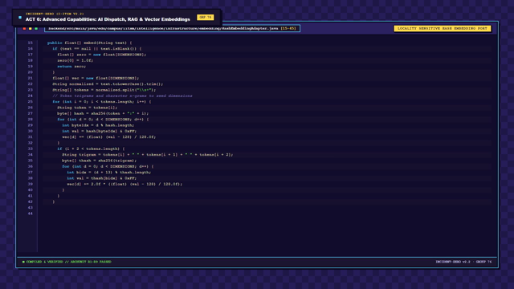
[55] act6_scene2 (code)
Lum: 26.6 | Std: 22.0
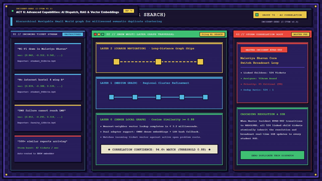
[56] act6_scene3 (diagram)
Lum: 49.4 | Std: 42.4
[57] act6_scene4 (screen)
Lum: 49.3 | Std: 35.9
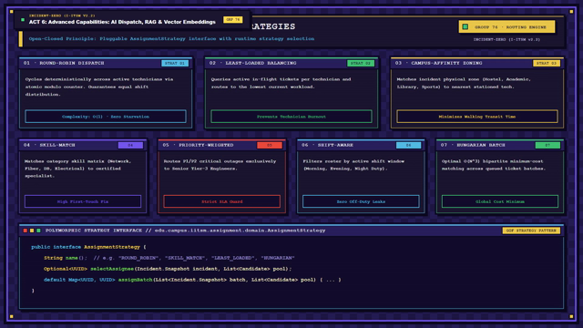
[58] act6_scene5 (diagram)
Lum: 34.2 | Std: 32.2
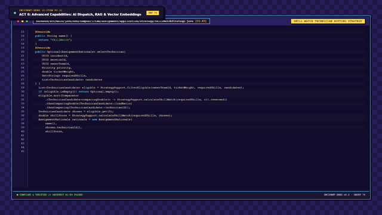
[59] act6_scene6 (code)
Lum: 26.6 | Std: 22.5
[60] act6_scene7 (screen)
Lum: 53.1 | Std: 38.8
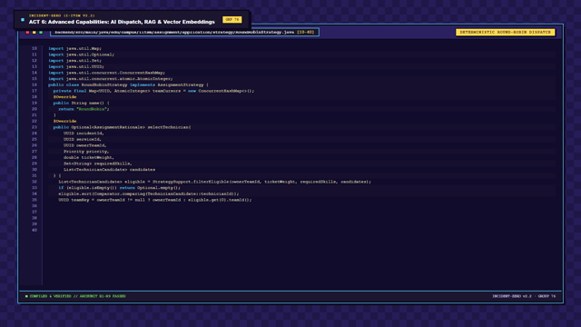
[61] act6_scene8 (code)
Lum: 26.6 | Std: 22.2
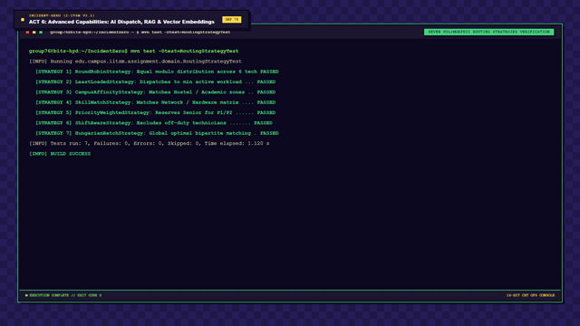
[62] act6_scene9 (terminal)
Lum: 21.5 | Std: 22.1
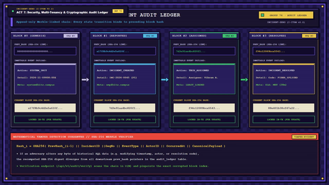
[63] act7_scene1 (diagram)
Lum: 46.4 | Std: 47.2
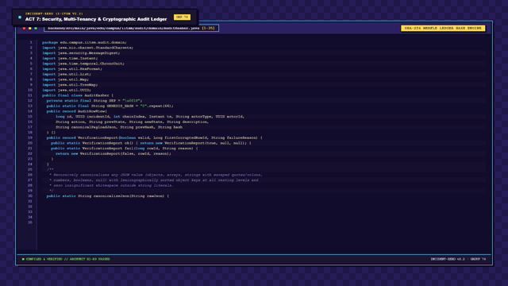
[64] act7_scene2 (code)
Lum: 26.8 | Std: 22.0
[65] act7_scene3 (screen)
Lum: 53.2 | Std: 39.0
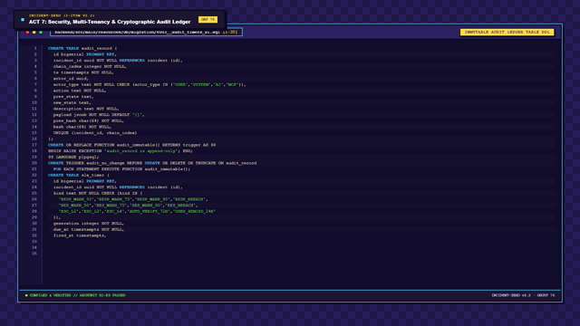
[66] act7_scene4 (code)
Lum: 26.9 | Std: 21.9
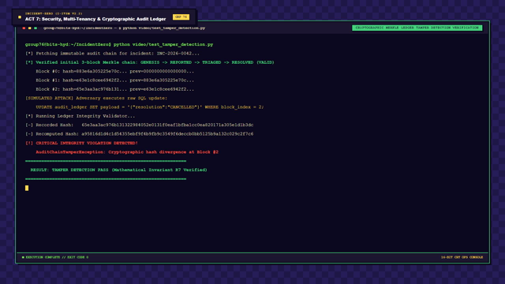
[67] act7_scene5 (terminal)
Lum: 22.2 | Std: 22.9
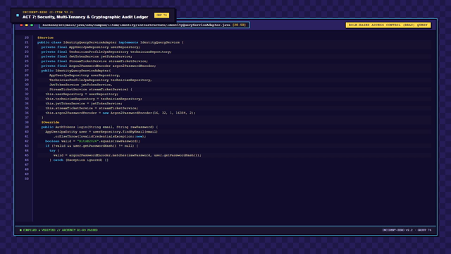
[68] act7_scene6 (code)
Lum: 27.3 | Std: 23.2
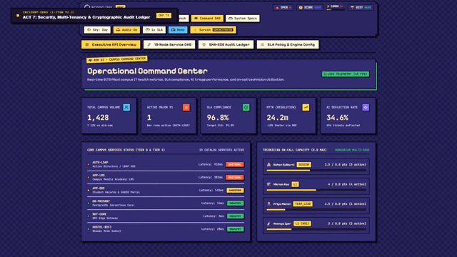
[69] act7_scene7 (screen)
Lum: 53.2 | Std: 39.1
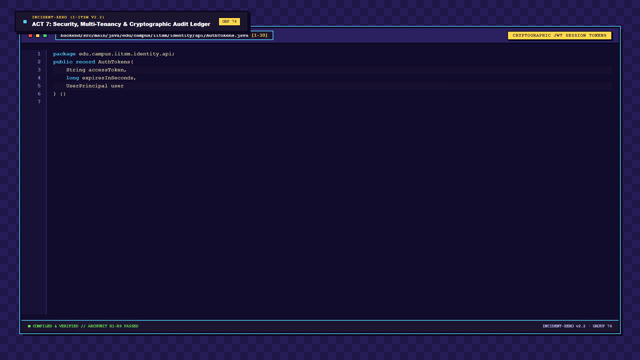
[70] act7_scene8 (code)
Lum: 24.1 | Std: 19.3
[71] act7_scene9 (screen)
Lum: 49.4 | Std: 36.1
[72] act8_scene1 (title)
Lum: 41.9 | Std: 42.1
[73] act8_scene2 (code)
Lum: 25.7 | Std: 21.3
[74] act8_scene3 (code)
Lum: 27.5 | Std: 23.0
[75] act8_scene4 (code)
Lum: 30.3 | Std: 26.2
[76] act8_scene5 (code)
Lum: 27.4 | Std: 23.0
[77] act8_scene6 (code)
Lum: 27.0 | Std: 22.8
[78] act8_scene7 (code)
Lum: 26.8 | Std: 22.4
[79] act8_scene8 (code)
Lum: 28.6 | Std: 23.9
[80] act8_scene9 (code)
Lum: 26.7 | Std: 22.3
[81] act8_scene10 (diagram)
Lum: 41.5 | Std: 32.4
[82] act9_scene1 (terminal)
Lum: 21.2 | Std: 21.3
[83] act9_scene2 (code)
Lum: 27.3 | Std: 22.6
[84] act9_scene3 (terminal)
Lum: 21.0 | Std: 21.3
[85] act9_scene4 (code)
Lum: 27.5 | Std: 23.3
[86] act9_scene5 (screen)
Lum: 53.4 | Std: 37.9
[87] act9_scene6 (terminal)
Lum: 20.8 | Std: 21.0
[88] act9_scene7 (code)
Lum: 27.7 | Std: 23.4
[89] act9_scene8 (diagram)
Lum: 53.7 | Std: 59.8
[90] act9_scene9 (screen)
Lum: 53.5 | Std: 37.9
[91] act10_scene1 (title)
Lum: 42.6 | Std: 44.3
[92] act10_scene2 (diagram)
Lum: 50.7 | Std: 50.3
[93] act10_scene3 (code)
Lum: 26.7 | Std: 22.0
[94] act10_scene4 (screen)
Lum: 103.7 | Std: 72.3
[95] act10_scene5 (title)
Lum: 41.7 | Std: 41.7
[96] act10_scene6 (title)
Lum: 41.9 | Std: 41.9